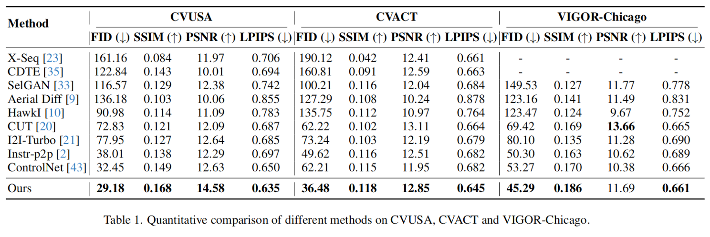
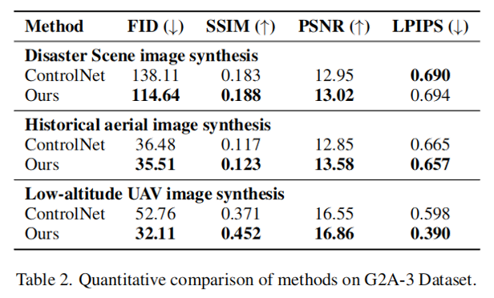

Quantitative Evaluation of Existing datasets
On the suburban CVUSA and CVACT datasets, our SkyDiffusion method achieved the outstanding results. Compared to
state-of-the-art methods, it reduced FID by 25.72% and increased SSIM by 7.68%, demonstrating its superiority in
synthesizing realistic and consistent satellite images. In the urban VIGOR-Chicago dataset, SkyDiffusion reduced FID by
14.9% and improved SSIM by 9.41% compared to the state-of-the-art method.

The tasks on the G2A-3 dataset present certain challenges; however, our method achieves
significant performance improvements over the commonly used image-conditioned synthesis method, ControlNet. SkyDiffusion
reduces the FID by an average of 19.60% and increases the SSIM by an average of 9.90%.
